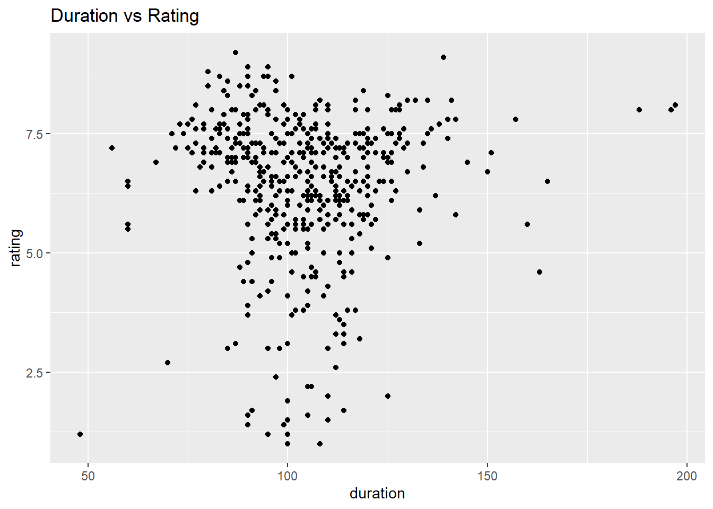

I believe these movies represent the best in Turkish cinema. They are widely adored, and I personally enjoyed watching each of them. While CM101 MMXI Fundamentals is a stand-up performance rather than a movie, it remains exceptionally popular. In my opinion, Cem Yılmaz is the standout figure in the world of stand-up comedy, making CM101 MMXI Fundamentals a must-see for comedy enthusiasts.
Tail
The bottom 5 is shown below.
Code
tail(movies, n = 5L) %>%select(title, rating, vote)
title rating vote
466 Cumali Ceber 2 1.2 10228
467 Müjde 1.2 9920
468 15/07 Safak Vakti 1.2 20606
469 Cumali Ceber: Allah Seni Alsin 1.0 39266
470 Reis 1.0 73972
I recently watched Cumali Ceber, and in my opinion, it stands out as an exceptionally poor movie. It might even be considered the worst in the Turkish film industry. I concur with its low rating. Although I haven’t seen the others, judging by their ratings, I’m inclined to believe they are also of subpar quality, and as a result, I’ve decided not to watch them.
b)My Favorite Ones
My favorite 3 movies, their rankings and ratings are listed below.
Code
movies %>%filter(title =="Kolpaçino"| title =="Yedinci Kogustaki Mucize"| title =="Babam ve Oglum")
The visual representation below illustrates the annual averages of movie ratings, revealing a decline as we approach the present day. It is crucial, however, to take into account the number of movies released, as it directly influences the rating averages.
Code
movies %>%group_by(release_year) %>%summarize(yearly_average =mean(rating)) %>%ggplot(aes(x = release_year, y = yearly_average)) +geom_point() +ggtitle("Yearly Rating Averages")
Below, you can observe a general increase in the number of movies released over the years.
Code
movies %>%group_by(release_year) %>%summarize(movie_number =n()) %>%ggplot(aes(x = release_year, y = movie_number)) +geom_point() +ggtitle("Number of Movies Over the Year")
Box Plot
Code
movies %>%ggplot(aes(x =as.factor(release_year), y = rating)) +geom_boxplot() +theme(axis.text.x =element_text(angle =90, hjust =1))+xlab("release_year")
Since 2003, there has been a dramatic increase in the number of movies released, coinciding with relatively lower ratings.
Vote vs Rating
Code
movies %>%ggplot(aes(x = vote, rating)) +geom_point() +ggtitle("Vote vs Rating")
The majority of votes fall within the range of 0 to 15000, where there is a concentration of ratings above 5.0. It’s noticeable that as the number of votes increases, the ratings tend to be generally high. However, a more in-depth investigation with a larger dataset is necessary to draw definitive conclusions.
Duration vs Rating
Code
movies %>%ggplot(aes(x = duration, rating)) +geom_point() +ggtitle("Duration vs Rating")

The durations of the movies tend to accumulate within the range of approximately 75 to 130 minutes. Interestingly, within this range, we observe both high and low ratings. Therefore, there doesn’t appear to be a clear relationship between the duration of the movies and their ratings.
left_join(movies_top, movies, by =c("title_top"="title")) %>%select(-release_year_top) %>%select(ranking, everything()) %>%arrange(desc(rating))
# A tibble: 11 × 6
ranking title_top release_year duration rating vote
<int> <chr> <dbl> <dbl> <dbl> <dbl>
1 20 Ayla: The Daughter of War 2017 125 8.3 42990
2 23 Yedinci Kogustaki Mucize 2019 132 8.2 54155
3 27 Babam ve Oglum 2005 108 8.2 91024
4 31 Eskiya 1996 128 8.1 71698
5 32 Her Sey Çok Güzel Olacak 1998 107 8.1 27119
6 37 Kis Uykusu 2014 196 8 54633
7 40 Nefes: Vatan Sagolsun 2009 128 8 35018
8 38 Ahlat Agaci 2018 188 8 27002
9 42 G.O.R.A. 2004 127 8 66029
10 44 Vizontele 2001 110 8 38399
11 58 Bir Zamanlar Anadolu'da 2011 157 7.8 49352
The ranking reflects the actual positions of these movies within the ‘movies’ dataset. Despite being in the top 1000 list on IMDB, they do not occupy the highest positions in the initial dataframe. This suggests that IMDB employs additional criteria, such as awards received or tickets sold, to order movies in its top 1000 lists.